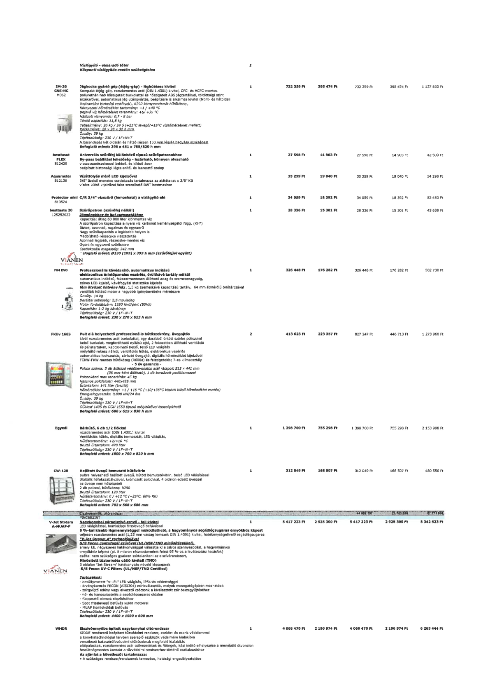

| Tétel | Menny. | Egys. | Anyag e.ár (net HUF) | Díj e.ár (net HUF) | Anyag összesen (net HUF) | Díj összesen (net HUF) | Anyag+Díj összesen (net HUF) |
|---|---|---|---|---|---|---|---|
| Vízlágyító - elmaradó tétel | 1 | NaN | 0 | 0 | 0 | 0 | 0 |
| IM-30 CNE-HC M062 Jégkocka gyártó gép (étjég-gép) - léghűtéses kivitel | 1 | NaN | 732 359 | 395 474 | 732 359 | 395 474 | 1 127 833 |
| besthead FLEX 812420 Univerzális szűrőfej különböző típusú szűrőpatronokhoz | 1 | NaN | 27 598 | 14 903 | 27 598 | 14 903 | 42 500 |
| Aquameter 812136 Vízátfolyás mérő LCD kijelzővel | 1 | NaN | 35 259 | 19 040 | 35 259 | 19 040 | 54 298 |
| Protector mini C/R 3/4" vízszűrő (lemosható) a vízlágyító elé 810524 | 1 | NaN | 34 059 | 18 392 | 34 059 | 18 392 | 52 450 |
| besttaste 20 125252022 Szűrőpatron (szűrőfej nélkül) | 1 | NaN | 28 336 | 15 301 | 28 336 | 15 301 | 43 638 |
| F64 EVO Professzionális kávédaráló, automatikus indítású | 1 | NaN | 326 448 | 176 282 | 326 448 | 176 282 | 502 730 |
| FKUv 1663 Pult alá helyezhető professzionális hűtőszekrény, üvegajtós | 2 | NaN | 413 623 | 223 357 | 827 247 | 446 713 | 1 273 960 |
| Egyedi Bárhűtő, 6 db 1/2 fiókkal | 1 | NaN | 1 398 700 | 755 298 | 1 398 700 | 755 298 | 2 153 998 |
| CW-120 Haajlított üvegű bemutató hűtővitrin | 1 | NaN | 312 049 | 168 507 | 312 049 | 168 507 | 480 556 |
| V-Jet Stream A-MUAP-F Nagykonyhai páraelszívó ernyő - fali kivitel | 1 | NaN | 5 417 223 | 2 925 300 | 5 417 223 | 2 925 300 | 8 342 523 |
| WHDR Elszívóernyőbe épített nagykonyhai oltórendszer | 1 | NaN | 4 068 470 | 2 196 974 | 4 068 470 | 2 196 974 | 6 265 444 |
